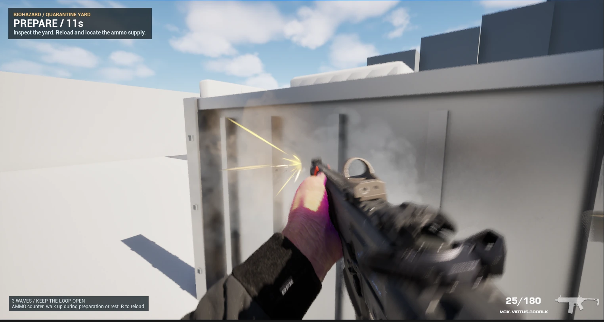

Snake Duel.
A retro Snake game with four distinct AI opponents—and a developer view that reveals how they choose, predict, and escape.
- My role
- Game systems, AI & visual direction
- Solo / group
- Solo project
- When
- Oct–Nov 2026
My role & contribution
- Shaped four enemy archetypes around collection, caution, interception, and evasion.
- Combined route search with growth, tail-escape, and moving-hazard checks.
- Built a CRT visual treatment and an inspector for routes, rejection reasons, and planning state.
Core gameplay
Collect beans, grow, and use your body to cut off rival snakes. Speed boosts create attacking opportunities, while mines, obstacles, and limited escape space make every turn a risk–reward decision.
Core game design
The enemies share safety rules but pursue different goals. Red tries to control the player’s space; Golden prioritises escape. Those differences give players behaviours to recognise and exploit.
Pathfinding & decision-making
Finding food is only part of the problem. A route must also account for a moving body, queued growth, rival heads and hazards. The planner separates route search, simulated survival and tactical preference so a valuable reward cannot outweigh a safer move.
- ObserveRead the visible world state
- SearchFind routes and reachable space
- SimulateCheck growth, hazards and escape
- RankSafety tier, then utility
- RecheckValidate the next move now
01 / BFS for routes and space
Every grid step has equal cost, so breadth-first search finds shortest routes without a weighted search. Cells use the integer index y × width + x; packed arrays store the queue, visited markers, distances and parent links. Parent links reconstruct a route, while a full traversal estimates the connected space available to the snake.
A fixed neighbour order makes equal-length choices reproducible. Each expanded node spends part of the shared work budget; an incomplete search is reported explicitly rather than mistaken for an unreachable target.
02 / Simulate beyond the pickup
A short path can end in a trap. Food-route validation advances a projected world through movement, collisions and queued growth, then requires both a legal continuation and a simulated route towards the tail. Entering the snake’s own tail cell is allowed only when that tail will vacate; other snakes’ tails remain blocked.
Moving mines are forecast through activation, bouncing and the waits between snake moves. Moving-diamond routes also account for the growth they cause. A reward plan that exhausts the search budget is rejected.
03 / Safety before utility
The planner evaluates straight, left and right candidates for legality, follow-up moves, nearby rival heads and accessible space. It selects the best available safety tier first. Only candidates in that tier compete on utility: normalised food access, space and escape options, minus threat exposure. Rejected food plans receive no food-access reward.
Tactical rewards are disabled in emergency fallbacks. If no food route qualifies, the snake chooses escape behaviour instead. These checks improve survival without assuming that a forecast guarantees the future.
Inspect the safety filterGDScript
Annotated source excerpt: scripts/ai/snake_ai.gd · _tactical_choice().
var best: Dictionary = {}
for c in d.candidates:
# Compare only legal moves in the best available safety tier.
if not c.legal or c.tier != best_tier:
continue
# An emergency or incomplete search must not earn attack rewards.
if (best_tier < 2 or c.scan.is_empty()
or not c.scan.complete or search.exhausted):
# false selects the shared survival comparison, not tactics.
if best.is_empty() or _better(c, best, false, p):
best = c
# Skip the tactical-scoring branch for this candidate.
continue04 / Shared rules, distinct personalities
The enemies share safety and movement rules. Their objectives and information limits create the differences a player can learn. Player-route forecasts use visible state and never read queued player input.
| Enemy | Programming choice |
|---|---|
| Pink · collector | Seeks acceptable short bean routes. Rival observations lag by 0.30 seconds, creating a deliberate cutoff weakness; terrain, self-body and mine checks stay current. |
| Purple · cautious planner | Validates food collection, queued growth and tail escape; can prefer open space to a nearby reward. |
| Red · interceptor | Scores predicted interception and space restriction after safety checks. Disengages when the player is invincible. |
| Golden · evader | Values mobility, space and clearance. Its tactical score has no food, blocking or attack reward. |
05 / Deliver a decision before movement
Strategy is planned between movement deadlines, with at most one active planning job per actor. Of the default 8,192-operation budget, 2,048 operations are reserved for current safety and up to 6,144 for strategy. At movement time, choose_current checks the proposed first step against current bodies, effects and hazards.
An unfinished, stale or unsafe plan uses a freshly checked survival fallback. The inspector records the target, route, rejection reasons, planning time and latest safety check, making both the decision and its timing inspectable.
When 60 FPS still feels stuck.
The challenge
The rendered frame rate looked healthy, but expensive AI planning delayed world updates and made snakes visibly pause.
How I solved it
Moved strategic planning between movement deadlines, reduced repeated simulation, and kept a fresh safety check plus a survival fallback when a plan was late or stale.
What changed
In one controlled debug stress layout, the longest update gap fell from 200.14 ms to 33.97 ms. Dense hazards and longer sessions remain optimisation targets.
Four Purple enemies, eight mines, sixteen diamonds; fixed layout, 30 warm-up and 600 recorded frames in a Godot debug build.
See it in action.
